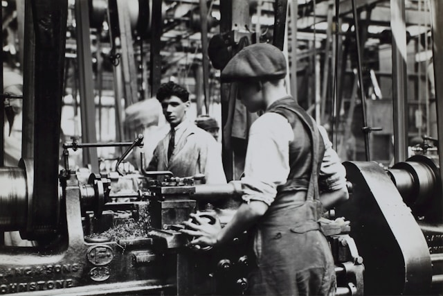
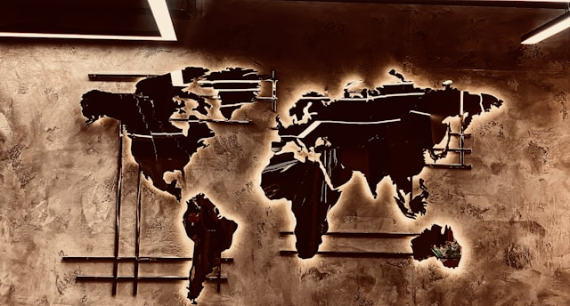
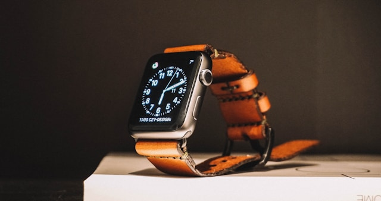

¿Quienes Somos?
Desde su fundación en 1995 en Ginebra, Suiza, LuxTime ha sido sinónimo de excelencia relojera. Nacida de la pasión del maestro relojero Étienne Valois, la marca fue concebida no solo como una fabricante de relojes, sino como una casa dedicada al arte de capturar el tiempo con distinción. En sus inicios, LuxTime se destacó por la minuciosidad de sus acabados y la fidelidad a la tradición relojera suiza, valores que se han mantenido intactos a lo largo de los años.
El primer modelo, el LuxTime Origin, marcó el inicio de una trayectoria excepcional. Esta pieza, de diseño clásico y corazón mecánico, no tardó en atraer la atención de coleccionistas europeos y críticos especializados. A lo largo de las décadas, la marca se expandió internacionalmente, conservando siempre su esencia artesanal, incluso mientras incorporaba innovaciones técnicas como movimientos automáticos de última generación, materiales nobles y diseños minimalistas que dialogan con la modernidad.
Con el tiempo, LuxTime diversificó sus colecciones, incluyendo modelos para distintos estilos de vida, sin perder el lujo y la precisión que la caracterizan. Desde relojes con diamantes éticos hasta ediciones limitadas de platino y oro blanco, cada pieza refleja una dedicación absoluta al detalle. LuxTime también ha sabido adaptarse al presente: hoy combina elegancia clásica con avances tecnológicos, como sus recientes líneas de relojes inteligentes de lujo.
Más allá del producto, LuxTime ha construido una identidad basada en la sostenibilidad, la innovación responsable y la búsqueda constante de la perfección. En 2025, la inauguración del Museo LuxTime en Ginebra consagró su legado como un referente en la alta relojería, rindiendo homenaje a sus raíces y proyectando su visión hacia el futuro.
Nuestra Historia
1995
Fundación y Visión:LuxTime nace en Ginebra, Suiza, fundada por Étienne Valois con una visión clara: “El tiempo no se mide en segundos, sino en momentos que merecen ser recordados con elegancia.”
1998
Primer Reloj Icónico: Nace el modelo LuxTime Origin, aclamado por su precisión y estética artesanal.
2002
Reconocimiento Internacional: Premio en Baselworld como “Mejor Diseño de Alta Relojería Emergente”.
2005
Colección Étoile: Relojes femeninos con diamantes éticos y piel italiana.
2009
Expansión Global: Boutiques en Nueva York, Tokio y Dubái. Inicia su línea sostenible.
2012
Tradición e Innovación: Lanzamiento del ChronoLume, tecnología luminosa y 120h de reserva.
2016
Valois Legacy: Edición limitada en oro blanco y platino por el 20º aniversario.
2020
Pulse: Primer smartwatch de lujo, combinando tecnología y artesanía.
2023
Sostenibilidad: Producción carbono neutral y campaña “Elegancia consciente”.
2025
Museo LuxTime: Se inaugura en Ginebra como homenaje a su legado relojero.
Galeria de nuestra marca

Nuestra primera fabrica

Presencia en todo el mundo

Produccion sostenible

Nuestro primer smartwatch